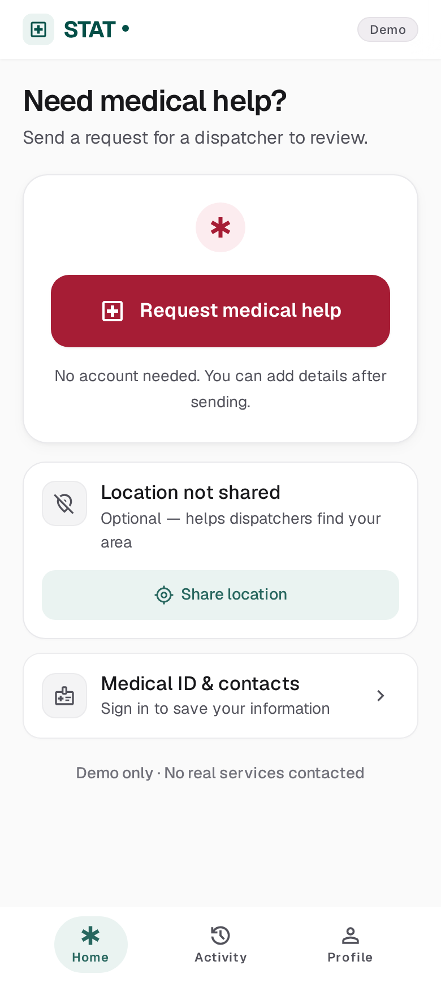
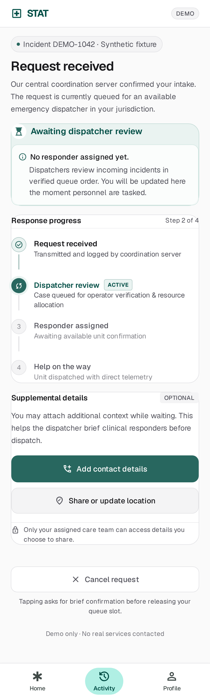
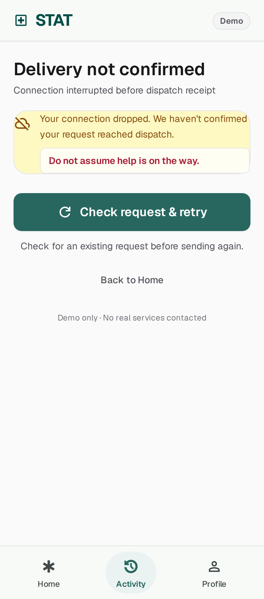
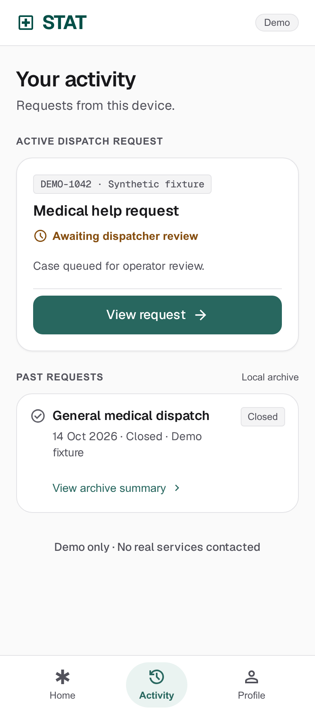
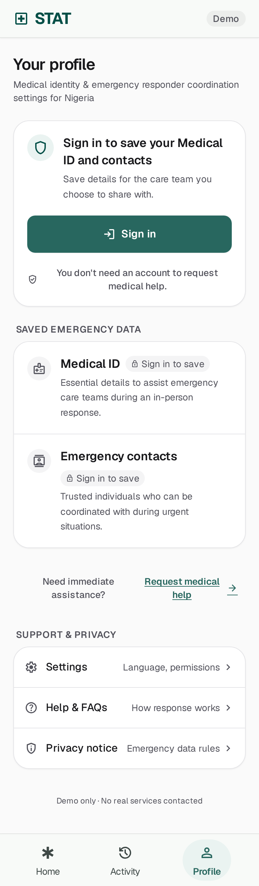
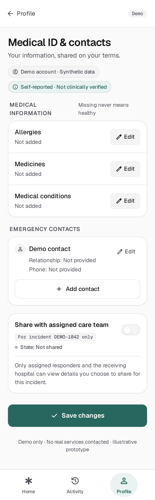
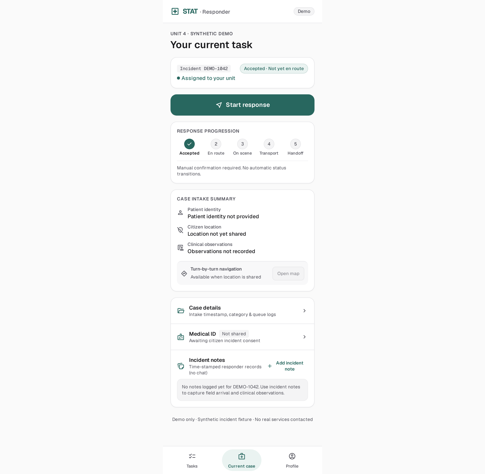
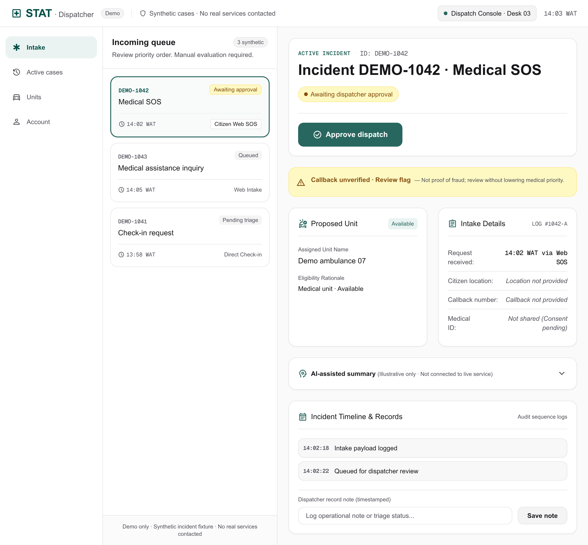

01 · Mobile web · Stitch export
Open image ↗Home
Anonymous SOS, optional location, Medical ID shortcut

Approved direction: soft neutral surfaces, muted teal, a clear emergency action and secondary tools kept out of the way.
Eight exported Stitch drafts and one clearly labelled hospital fallback. These are isolated screen studies, not a connected app. Sample records are synthetic. Sign-in, SOS delivery, AI, saving and dispatch are not implemented here.
Anonymous SOS, optional location, Medical ID shortcut

Acknowledged intake; no responder assigned yet

Uncertain delivery is not success or a dispatch promise

Active request stays directly reachable

Saving medical information requires sign-in; SOS does not

Self-reported information and incident-scoped sharing

Assigned case, next action, incident notes · wide capture shown at readable scale

Human approval; illustrative AI and review flags

Hand-authored fallback after Stitch transport failure